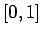

Proponemos una variable lingüística definida con cinco etiquetas, sobre el universo de discurso :
La figura 11.14 muestra el cuadro de diálogo con la Variable Lingüística propuesta (Ver sección 6.1). Para lograr este resultado, se ha empleado la opción Autodefinir (sección 6.2) para construir tres conjuntos difusos trapezoidales, y luego se ha editado cada uno de ellos para darle el Nombre adecuado (sección 6.1.2). El valor por defecto que toma la Variable es Indefinido.